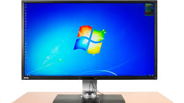
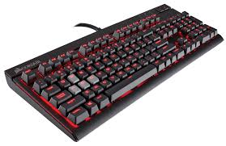
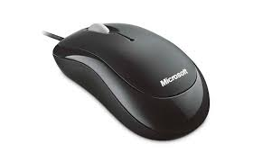
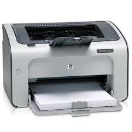
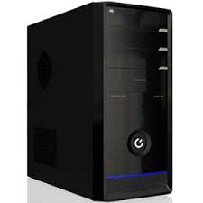

MONITOR- The monitor is the display for a PC. This is where anything you can see is displayed. Monitors vary in size and use LCD screens for better quality. They connect to your PC through a DVI or HDMI cable attached to the graphics card. Newer monitors use OLED rather than LCD because they produce more high quality visuals, but do cost more than LCD screens.
KEYBOARD- The keyboard is the main way of typing on a PC. When typed, each key produces a letter on the screen. Keyboards vary depending on what they are used for, some are basic and used for normal activity or specialist keyboards that control computer functions are also used in specialist industries. Keyboards connect to a PC wirelessly or use USB cables.
MOUSE- The mouse is the primary way of navigating a computer. The mouse used to have a ball that could move in any direction. Now, infra red lasers have replaced the ball and are more efficient than the ball mice. Currently, touch controlled mice with no physical buttons are being tested but are not as good as the laser or ball mice currently used on many PCs.
PRINTER- The printer is computer hardware that will print anything written or created on a PC onto paper, whether it be text or photos. Printers on the market today use either inkjet (liquid ink) or laser (toner) technology. They also have other functions besides printing, this includes copying, faxing and scanning making it a useful piece of hardware.
COMPUTER CASING- The computer casing is the housing for all the internal components of the PC. These are usually made from steel because they need to be durable. These are often quite bulky, but are the best for enthusiasts because there is plenty of room to work inside and all the components are easy to remove whereas laptops are harder to work on due to the enclosed space.